本页文字
停止所有探索，死磕自媒体
立正×Jiabin Lu
2026年11月24日 · 超线性学院
公开分享超线性学院2026年11月24日
立正发到第73个视频，才出了第一个涨粉过千的。他的629个视频里，带来上千订阅的只有20个。你刷到的是别人中了的那几个，没中的那几百个看不见，所以自媒体看起来像玄学，其实它是手艺。上半场讲为什么要做：每条副业的路最后都卡在同一个地方，不认识会付钱的人。打造一个品牌一年要两三亿广告，一张人脸看一次就记住。一期28分钟的视频被看了两万五千小时。嘴上说想赚钱却放着这件成本最低、杠杆最大的事不做，是态度问题。下半场讲怎么做：网感练得出来，一条内容的每个环节后台都有一个数，83个月里3个月占了28%的订阅，以及怎么才算死磕。
面向：到处探索副业、自媒体却迟迟没做好的工程师和打工人，和觉得火不火全看运气的人 · 42页 · 超线性学院社区直播·立正×Jiabin Lu
超线性学院社区直播 · 孙煜征（立正）× Jiabin Lu · 经授权转载
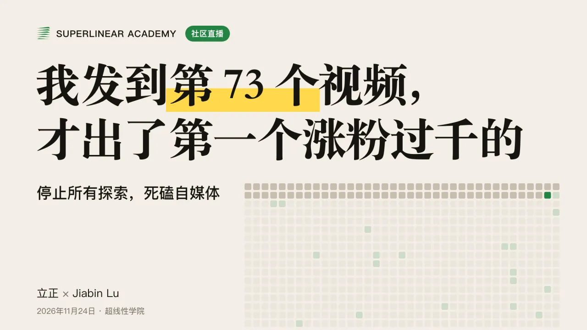
02 · 我的 YouTube 后台：头 73 个视频，每个带来多少订阅
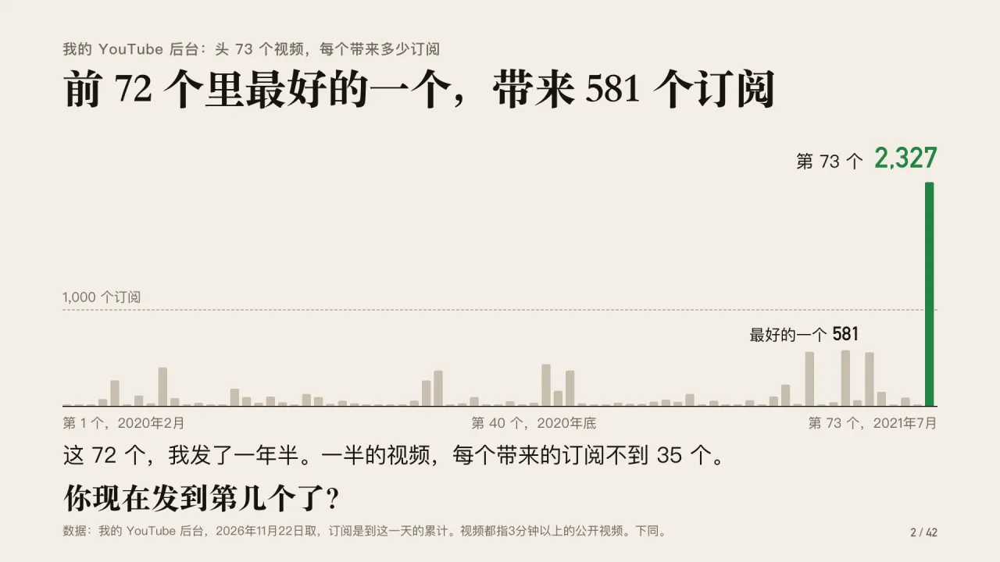
讲稿
我做 YouTube 六年多，现在 12 万订阅。这是我发的头 72 个视频，一根柱子是一个视频带来的订阅，按发布的先后排。虚线是一千。这 72 个里没有一个够得着，最好的一个是 581。这 72 个我发了一年半，有一半每个带来的订阅不到 35 个。第 73 个是 2021 年 7 月底发的，讲 Influence Without Authority，带来两千三百多个订阅。这是第一个过千的。你呢，现在发到第几个了？
1,000 个订阅
第 1 个，2020年2月
第 40 个，2020年底
第 73 个，2021年7月
最好的一个 581
这 72 个，我发了一年半。一半的视频，每个带来的订阅不到 35 个。
第 73 个 2,327
你现在发到第几个了？
数据：我的 YouTube 后台，2026年11月22日取，订阅是到这一天的累计。视频都指3分钟以上的公开视频。下同。
03 · 发了一阵没起色，就是没天赋、没网感吗？
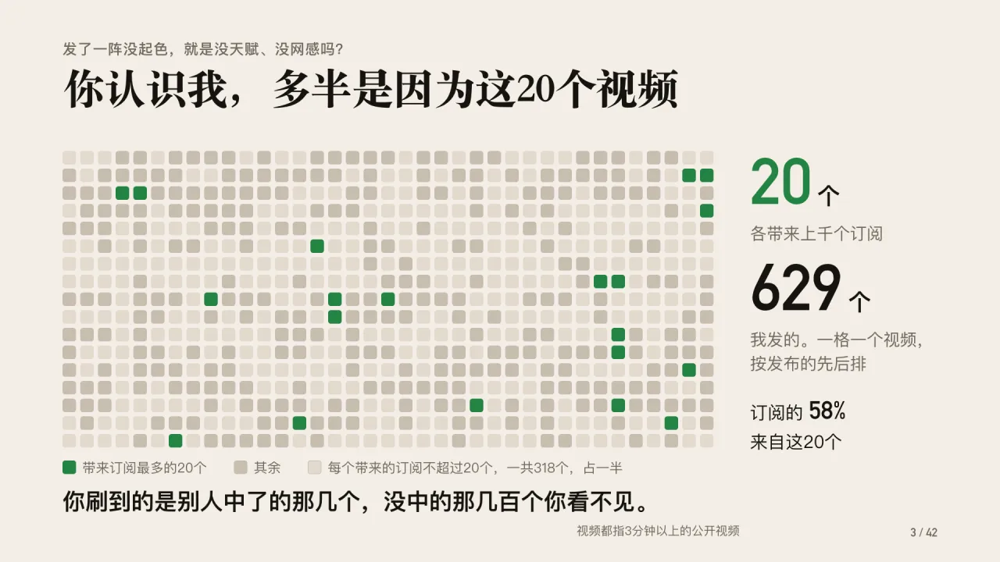
讲稿
发了一阵没起色，很多人会给自己下结论：没天赋，没网感。订阅我的人，多半是看了这 20 个视频里的某一个点的订阅。每一个都带来了一千个以上。我实际发的是 629 个。一格一个视频，从左到右、从上到下，按发布的先后排。第一个绿的，就是刚才那第 73 个。订阅的 58% 来自这 20 个。浅色的那一半，每个带来的订阅不超过 20 个。中的是 20 个，发的是 629 个，三十个里中一个。你刷到的是别人中了的那几个，没中的那几百个你看不见。所以它看起来像玄学。
20个 各带来上千个订阅
629个 我发的。一格一个视频，按发布的先后排
订阅的 58%来自这20个
带来订阅最多的20个 其余 每个带来的订阅不超过20个，一共318个，占一半
你刷到的是别人中了的那几个，没中的那几百个你看不见。
视频都指3分钟以上的公开视频
04
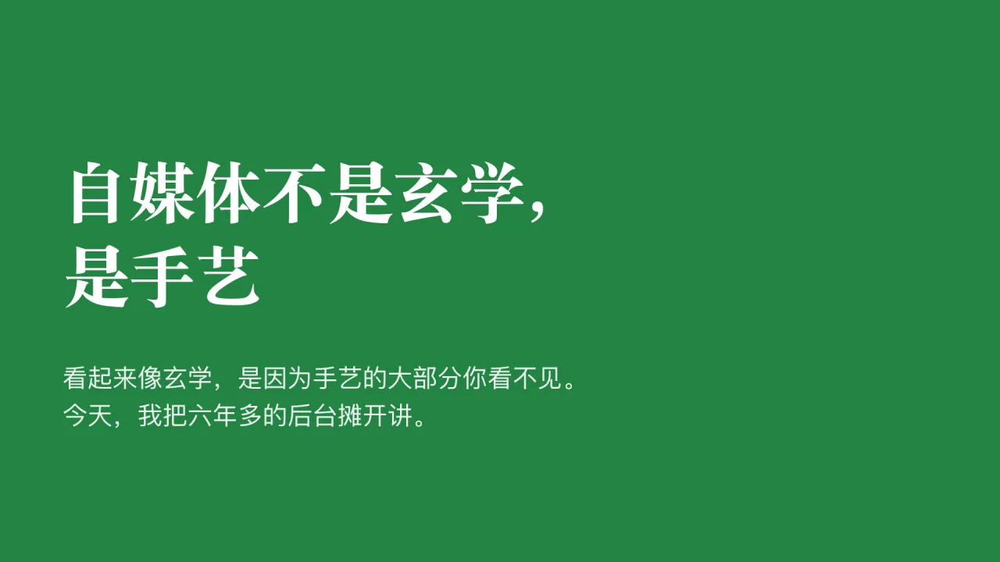
讲稿
自媒体不是玄学，是手艺。它看起来像玄学，是因为手艺的大部分你看不见。我做了六年多，将近一千个视频，12 万订阅。按这个更新量，这个数其实不高，这话我自己在视频里说过。拿它出来，是因为只有自己的后台我看得全。我先讲半小时多，然后请 Jiabin 上麦，当场改一条内容。
看起来像玄学，是因为手艺的大部分你看不见。今天，我把六年多的后台摊开讲。
05 · 这场直播的起因：论坛里的一段评论
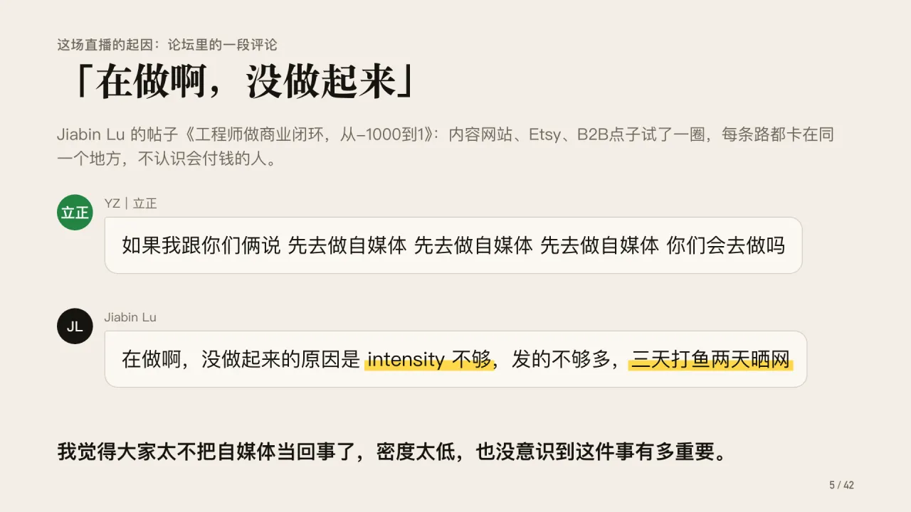
讲稿
这场直播是从一篇帖子来的。Jiabin 写了一篇帖子，讲工程师想做自己的生意。试了好几条路，每条都卡在同一个地方：不认识会付钱的人。我在评论区问了他们一句，把同一句话说了三遍。他回得很快：在做啊。然后自己把原因也说了。他没说自己没天赋，说的是 intensity 不够，三天打鱼两天晒网。我觉得他说得很准。而且不只是他：大家太不把自媒体当回事了，密度太低，也没意识到这件事有多重要。
Jiabin Lu 的帖子《工程师做商业闭环，从-1000到1》：内容网站、Etsy、B2B点子试了一圈，每条路都卡在同一个地方，不认识会付钱的人。
立正 YZ｜立正
如果我跟你们俩说 先去做自媒体 先去做自媒体 先去做自媒体 你们会去做吗
JL Jiabin Lu
在做啊，没做起来的原因是 intensity 不够，发的不够多，三天打鱼两天晒网
我觉得大家太不把自媒体当回事了，密度太低，也没意识到这件事有多重要。
06 · 今天讲什么
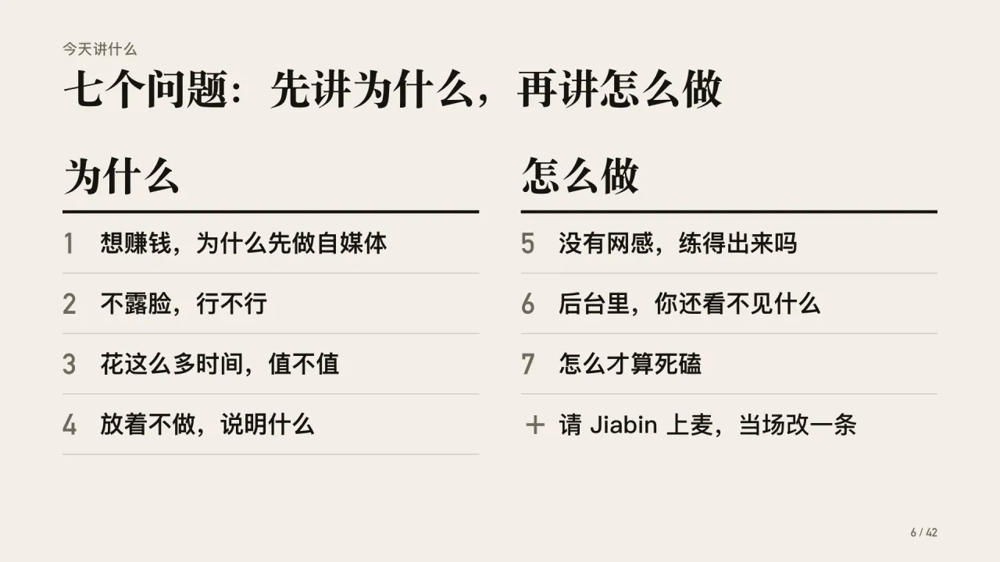
讲稿
上半场讲为什么，四个问题：想赚钱，为什么要先做自媒体；不露脸行不行；花这么多时间值不值；放着它不做，说明什么。下半场讲怎么做，三个问题：没有网感，练不练得出来；后台里你还看不见什么；怎么才算死磕。讲完以后请 Jiabin 上麦，拿一条发出去的内容，当场改给大家看。
为什么 1 想赚钱，为什么先做自媒体
2 不露脸，行不行
3 花这么多时间，值不值
4 放着不做，说明什么
怎么做 5 没有网感，练得出来吗
6 后台里，你还看不见什么
7 怎么才算死磕
＋ 请 Jiabin 上麦，当场改一条
08 · 为什么先做自媒体
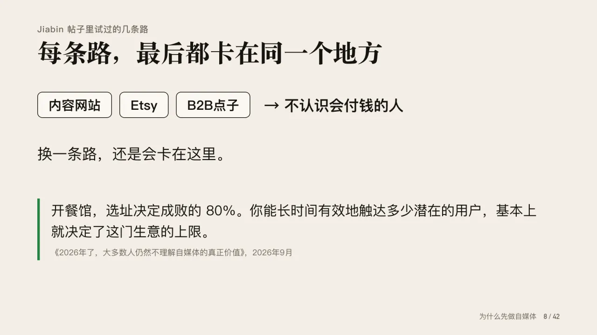
讲稿
你看 Jiabin 试的这几条路，卡住的是同一个地方：不认识会付钱的人。换一条路，还是会卡在这里。开餐馆最重要的是选址，选址决定成败的八成。你能长期触达多少会付钱的人，就是你这门生意的选址。
内容网站 Etsy B2B点子 → 不认识会付钱的人
换一条路，还是会卡在这里。
开餐馆，选址决定成败的 80%。你能长时间有效地触达多少潜在的用户，基本上就决定了这门生意的上限。
《2026年了，大多数人仍然不理解自媒体的真正价值》，2026年9月
09 · 为什么先做自媒体
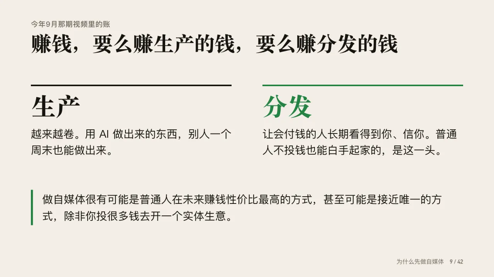
讲稿
我是学经济学的。一个东西从做出来到卖出去，钱要么被做的人赚走，要么被分发的人赚走。做这一头越来越卷。有了 AI，你做出来的东西，别人一个周末也能做出来。分发这一头，就是让会付钱的人长期看得到你、信你。这是普通人不投钱也能白手起家的地方。所以我今年想通以后，就开始劝身边的朋友赶紧做自媒体。
生产 越来越卷。用 AI 做出来的东西，别人一个周末也能做出来。
分发 让会付钱的人长期看得到你、信你。普通人不投钱也能白手起家的，是这一头。
做自媒体很有可能是普通人在未来赚钱性价比最高的方式，甚至可能是接近唯一的方式，除非你投很多钱去开一个实体生意。
11 · 不露脸行不行
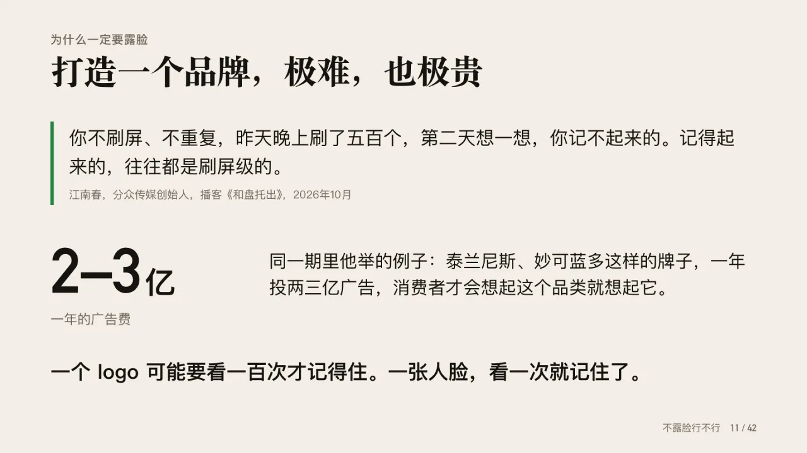
讲稿
我的回答是不行，一定要露脸。露脸其实是个人品牌的事。你想打造一个品牌，是极难、极贵的。江南春做了二十多年广告。他说你一晚上刷五百条，第二天一条都想不起来，想得起来的都是刷屏级的。让消费者想起一个品类就想起你，一年要投两三亿广告。我们没有这个钱。可是人脸反而很容易记住。
你不刷屏、不重复，昨天晚上刷了五百个，第二天想一想，你记不起来的。记得起来的，往往都是刷屏级的。
江南春，分众传媒创始人，播客《和盘托出》，2026年10月
2–3亿 一年的广告费
同一期里他举的例子：泰兰尼斯、妙可蓝多这样的牌子，一年投两三亿广告，消费者才会想起这个品类就想起它。
一个 logo 可能要看一百次才记得住。一张人脸，看一次就记住了。
12 · 不露脸行不行
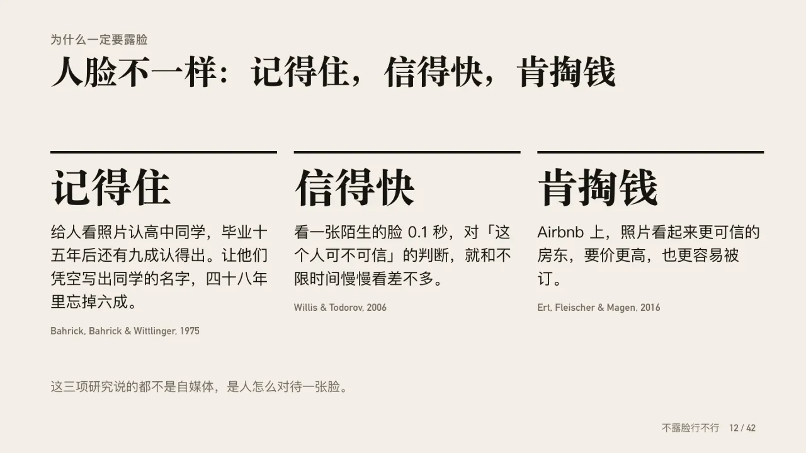
讲稿
第一个是记忆。给人看毕业照认同学，十五年后还能认出九成。可是让他们凭空想同学的名字，就越来越想不起来。第二个是信任。看一张陌生的脸十分之一秒，人就对「这个人可不可信」有了判断，再多看也差不多。这不等于判断得准，但人对脸就是这么快。第三个是钱。Airbnb 上，照片看起来更可信的房东，价格更高，也更容易被订。所以脸这个东西，记得住，信任来得快。文字要做到这两样，慢得多。
记得住 给人看照片认高中同学，毕业十五年后还有九成认得出。让他们凭空写出同学的名字，四十八年里忘掉六成。
Bahrick, Bahrick & Wittlinger, 1975
信得快 看一张陌生的脸 0.1 秒，对「这个人可不可信」的判断，就和不限时间慢慢看差不多。
Willis & Todorov, 2006
肯掏钱 Airbnb 上，照片看起来更可信的房东，要价更高，也更容易被订。
Ert, Fleischer & Magen, 2016
这三项研究说的都不是自媒体，是人怎么对待一张脸。
13 · 不露脸行不行
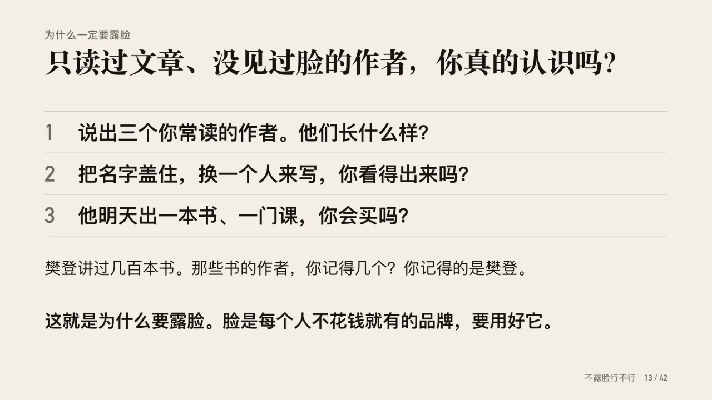
讲稿
大家可以想一想。你常读的那些文章，只看过文章、不知道脸，你真记得住这个人吗？真认识他吗？有的人可能已经发了很多文章了，你对他们真的有印象吗？同一段话换一个人说，你有感觉吗？他们出一个东西，你会买吗？很有可能不会。再想想反过来的：樊登讲了几百本书，那些书的作者你记得几个？我推荐过很多次《为什么伟大不能被计划》《树之生命木之心》，作者叫什么？你记得的是给你讲的那张脸。这就是为什么要露脸。你有这个东西，就要用好它。
1 说出三个你常读的作者。他们长什么样？
2 把名字盖住，换一个人来写，你看得出来吗？
3 他明天出一本书、一门课，你会买吗？
樊登讲过几百本书。那些书的作者，你记得几个？你记得的是樊登。
这就是为什么要露脸。脸是每个人不花钱就有的品牌，要用好它。
15 · 花这么多时间值不值
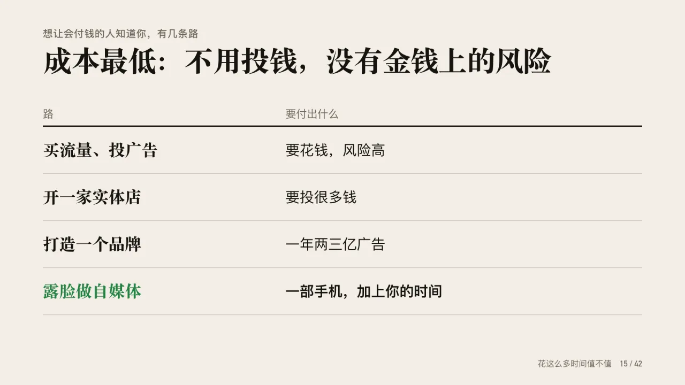
讲稿
先算要付出什么。你可以花钱买流量、投广告，那要投入，风险也高。你可以开一家实体店，那要投很多钱。你可以打造一个品牌，刚才说了，一年两三亿。露脸做自媒体，不用投钱，没有金钱上的风险。我有想法了，拿起手机到外面录一两分钟就是一期。
路 要付出什么
买流量、投广告 要花钱，风险高
开一家实体店 要投很多钱
打造一个品牌 一年两三亿广告
露脸做自媒体 一部手机，加上你的时间
16 · 花这么多时间值不值
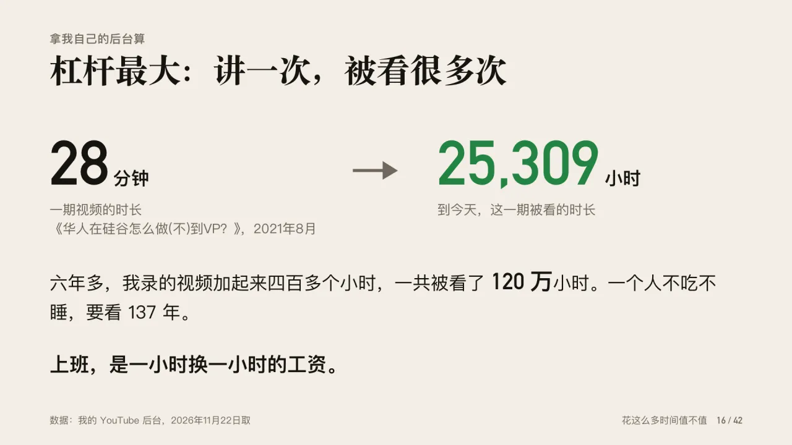
讲稿
再算能换回什么。这是我播放最高的一期，28 分钟，是我发的第 79 个，开头说的第 73 个之后一个月发的。到今天它被看了两万五千多个小时，是五万多倍。六年多我录的视频加起来四百多个小时，一共被看了 120 万小时。一个人不吃不睡要看 137 年。上班不是这样。公司买的是你的时间，一小时换一小时的工资，做完就没了。成本最低，杠杆最大。这两样加在一起的事，我想不出第二件。
28分钟 一期视频的时长《华人在硅谷怎么做(不)到VP？》，2021年8月
25,309小时
到今天，这一期被看的时长
六年多，我录的视频加起来四百多个小时，一共被看了 120 万小时。一个人不吃不睡，要看 137 年。
上班，是一小时换一小时的工资。
数据：我的 YouTube 后台，2026年11月22日取
18 · 放着不做，说明什么
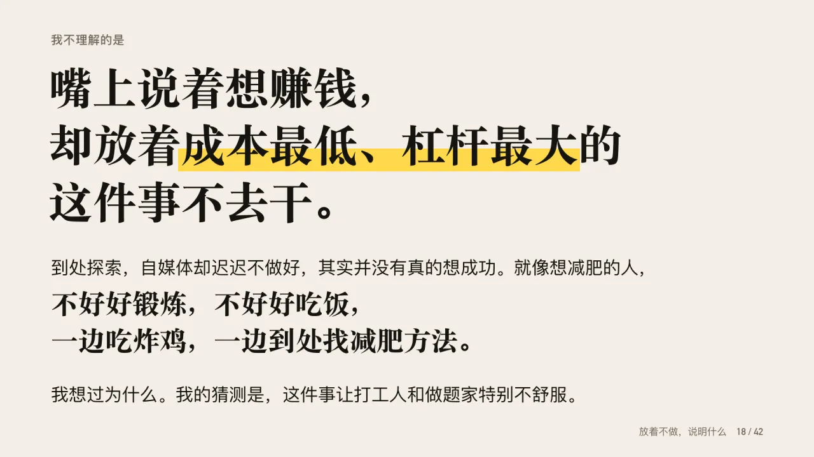
讲稿
在我看来，我不理解的是：你嘴上一边说着想赚钱，一边放着成本最低、杠杆最大的这件事不去干。一个人到处探索，自媒体却迟迟不做好，我觉得他并没有真的想成功。就像减肥的人不好好锻炼、不好好吃饭，一边吃炸鸡，一边到处找减肥方法。我以前一直想不通：自媒体好处这么大，又不用投钱，为什么做的人这么少？我的猜测是，很多人心里有冲突，而且这个冲突是藏着的。尤其是我们这种人，打工人，做题家。
到处探索，自媒体却迟迟不做好，其实并没有真的想成功。就像想减肥的人，
不好好锻炼，不好好吃饭，一边吃炸鸡，一边到处找减肥方法。
我想过为什么。我的猜测是，这件事让打工人和做题家特别不舒服。
19 · 放着不做，说明什么
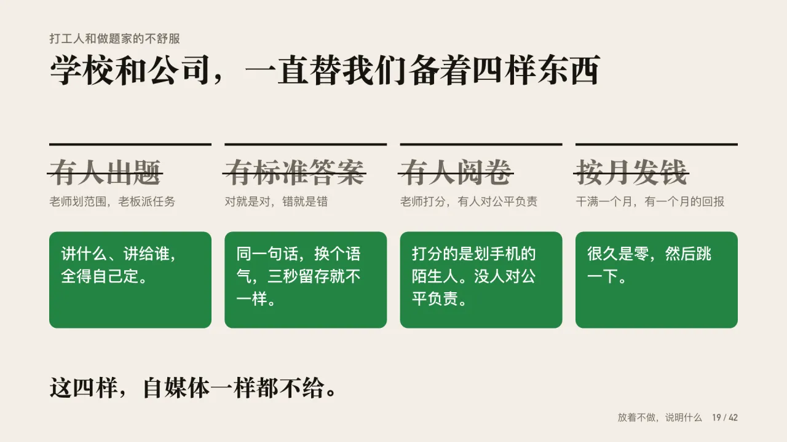
讲稿
上学的时候有人出题，上班有人派活。做自媒体，讲什么、讲给谁，得自己定。考试有标准答案。这里同一句话换个语气，结果就不一样。以前打分的是老师和老板，是懂行的人。这里打分的是划手机的陌生人，三秒钟决定，没人对公平负责。上班干满一个月就有一个月的钱。这里是很久是零，然后跳一下，后面我给你看我自己的数据。所以不舒服很正常。我们最擅长的那套努力，在这里用不上。
有人出题 老师划范围，老板派任务
讲什么、讲给谁，全得自己定。
有标准答案
对就是对，错就是错
同一句话，换个语气，三秒留存就不一样。
有人阅卷 老师打分，有人对公平负责
打分的是划手机的陌生人。没人对公平负责。
按月发钱 干满一个月，有一个月的回报
很久是零，然后跳一下。
这四样，自媒体一样都不给。
20 · 放着不做，说明什么
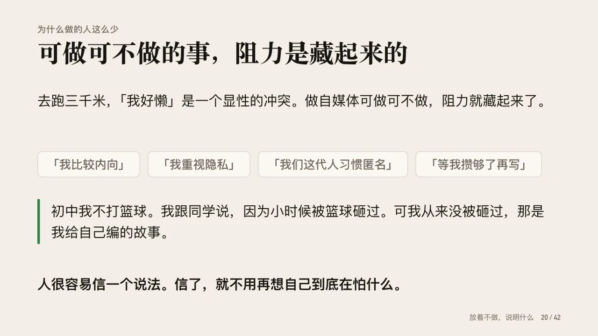
讲稿
跑三千米，你知道自己在跟懒打架。自媒体可做可不做，你感觉不到自己在躲。这些说法我都听过。我初中不打篮球，跟同学说小时候被球砸过。其实从来没有。我说不清为什么不想打，也许是觉得太晚了、打不好。我跟周洁说，比克服惯性更难的是发现它。它已经成了默认，你都不觉得自己做过选择。
去跑三千米，「我好懒」是一个显性的冲突。做自媒体可做可不做，阻力就藏起来了。
「我比较内向」 「我重视隐私」 「我们这代人习惯匿名」 「等我攒够了再写」
初中我不打篮球。我跟同学说，因为小时候被篮球砸过。可我从来没被砸过，那是我给自己编的故事。
人很容易信一个说法。信了，就不用再想自己到底在怕什么。
21 · 放着不做，说明什么
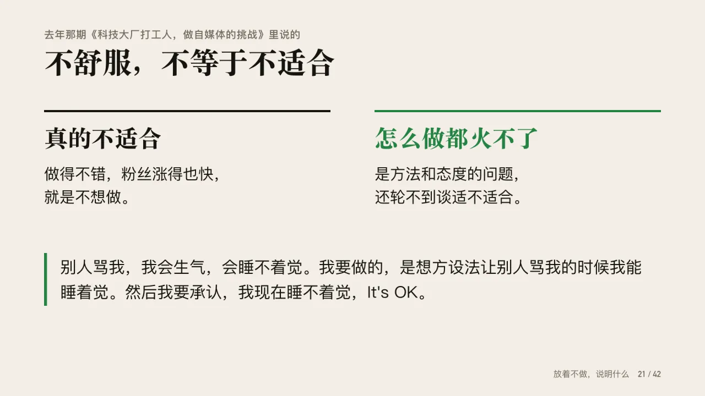
讲稿
我有个朋友做了几期，做得挺好，还挺火，然后就不想做了。这是真的不适合。很多人说的不适合，是怎么做都火不了。这是没找到方法，态度也不够。不舒服是真的。被骂我也会生气，也会睡不着。先承认现在睡不着，没关系。
真的不适合
做得不错，粉丝涨得也快，就是不想做。
怎么做都火不了
是方法和态度的问题，还轮不到谈适不适合。
别人骂我，我会生气，会睡不着觉。我要做的，是想方设法让别人骂我的时候我能睡着觉。然后我要承认，我现在睡不着觉，It's OK。
23 · 网感练得出来吗
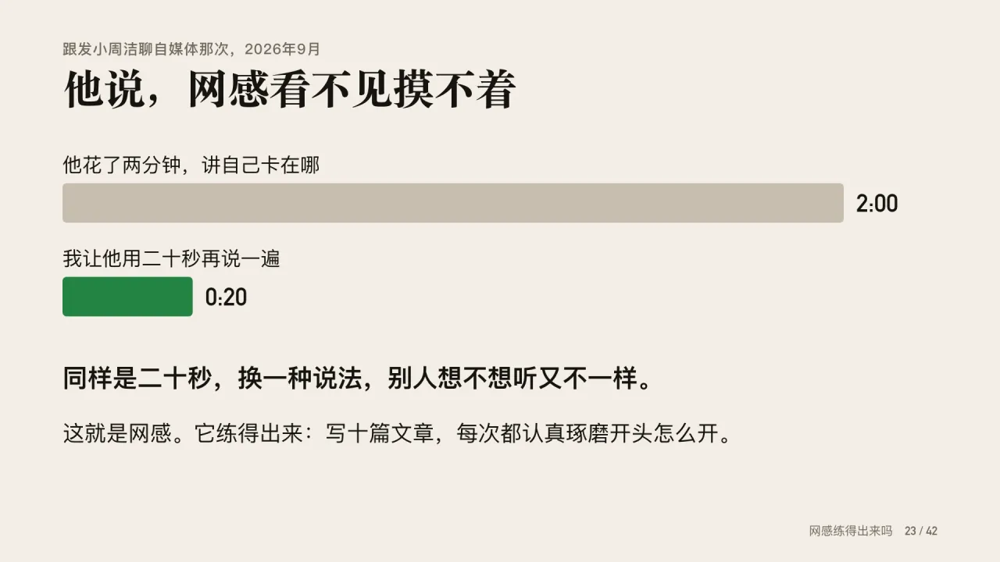
讲稿
九月我跟发小周洁聊了一个小时自媒体。他说网感看不见摸不着。我说刚才这件事就看得见。你讲了两分钟，我让你二十秒再说一遍。我自己也说了一个二十秒的版本，是说给观众听的：这个人是谁，卡在哪。他想到赵本山讲小品：稿子一样，包袱抖快了抖慢了，效果都不一样。这是手艺。
他花了两分钟，讲自己卡在哪
2:00 我让他用二十秒再说一遍
0:20 同样是二十秒，换一种说法，别人想不想听又不一样。
这就是网感。它练得出来：写十篇文章，每次都认真琢磨开头怎么开。
24 · 网感练得出来吗
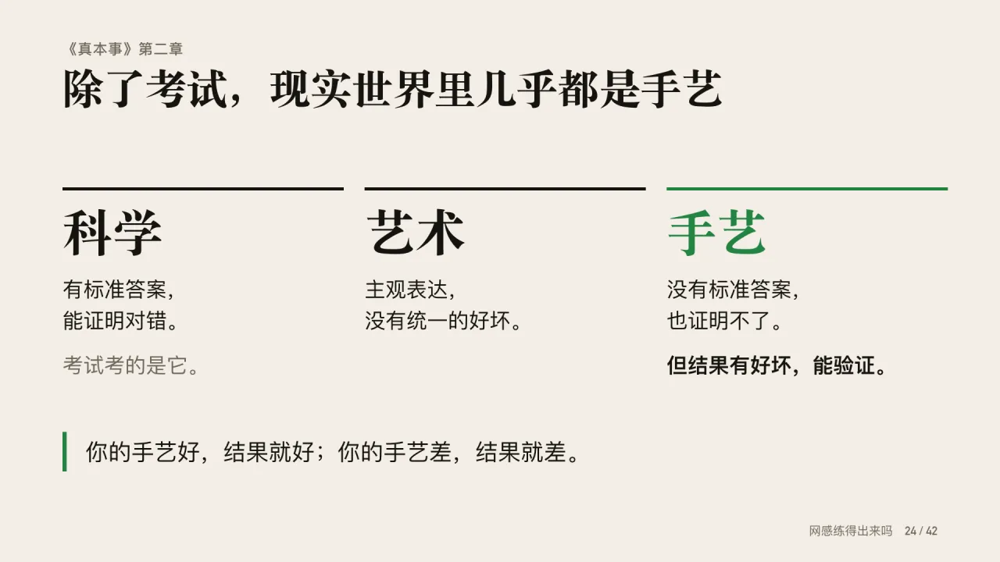
讲稿
网感练得出来，因为自媒体是一门手艺。我在《真本事》里把事情分成三种。科学有标准答案，能证明谁对谁错。我们从小考的就是这个。艺术是主观表达，没有统一的好坏。手艺在中间：没有标准答案，你也证明不了为什么。但它看结果，结果是好是坏，能看出来。写代码、做分析、做菜都是手艺。自媒体也是。它既然看结果，就能拿结果当镜子来练。
科学 有标准答案，能证明对错。
考试考的是它。
艺术 主观表达，没有统一的好坏。
手艺 没有标准答案，也证明不了。
但结果有好坏，能验证。
你的手艺好，结果就好；你的手艺差，结果就差。
25 · 网感练得出来吗
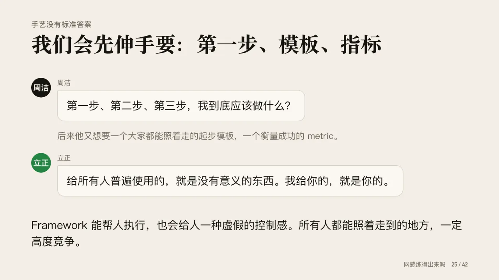
讲稿
周洁一上来问我的就是这个：第一步、第二步、第三步做什么。后来又想要模板，想要一个指标。我说我给不了。给所有人都能用的，就没有意义。这个我们到最后也没达成一致，他还是觉得 framework 能帮他理解世界。你要是也想先要一套步骤再开始，知道这是什么就行：是在找以前那个出题的人。
周洁 周洁
第一步、第二步、第三步，我到底应该做什么？
后来他又想要一个大家都能照着走的起步模板，一个衡量成功的 metric。
立正 立正
给所有人普遍使用的，就是没有意义的东西。我给你的，就是你的。
Framework 能帮人执行，也会给人一种虚假的控制感。所有人都能照着走到的地方，一定高度竞争。
26 · 网感练得出来吗
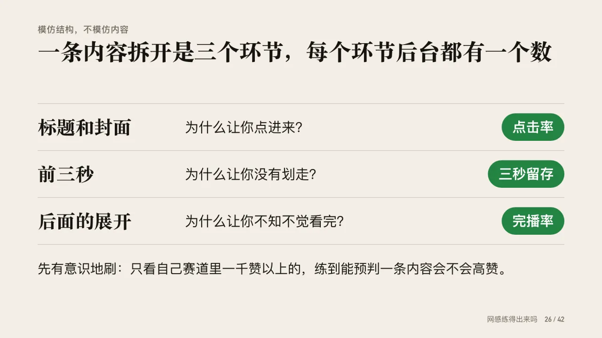
讲稿
标题和封面，决定别人点不点。前三秒，决定划不划走。后面的展开，决定看不看完。这三处对着三个数：点击率、三秒留存、完播率。所以练的办法也清楚：搜一批你这个赛道的人，只看一千赞以上的，不学五十个赞的。拆它这三处为什么有效。这三个数都在后台，在外面看不到。
标题和封面 为什么让你点进来？
点击率 前三秒 为什么让你没有划走？
三秒留存 后面的展开 为什么让你不知不觉看完？
完播率 先有意识地刷：只看自己赛道里一千赞以上的，练到能预判一条内容会不会高赞。
27 · 后台里还看不见什么
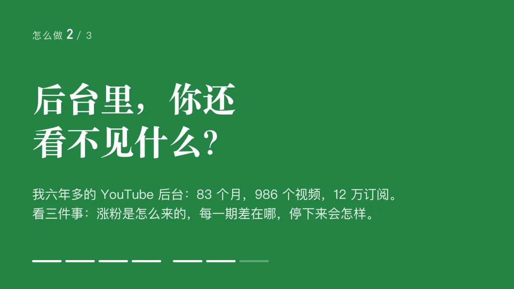
讲稿
开头给你看了两样：第一个之前的那 72 个，和没中的那 609 个。后台里你看不见的还有三样：涨粉是怎么来的，每一期差在哪，停下来会怎样。别人的后台我看不全，我只能拿我自己的给你看。
我六年多的 YouTube 后台：83 个月，986 个视频，12 万订阅。看三件事：涨粉是怎么来的，每一期差在哪，停下来会怎样。
28 · 后台里还看不见什么
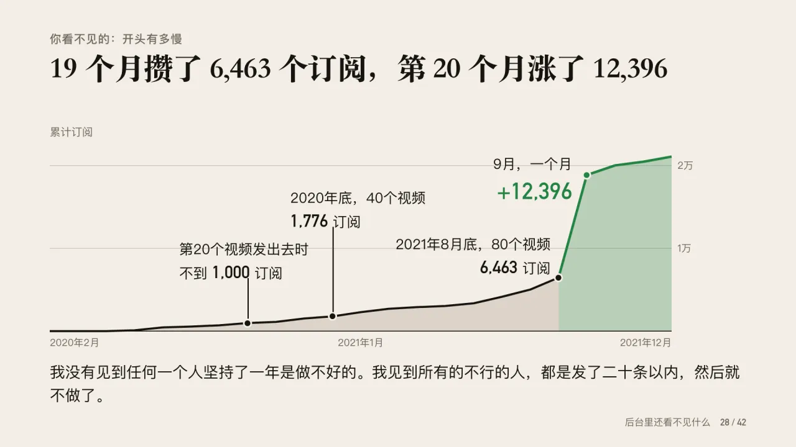
讲稿
先看涨粉是怎么来的。这是我头两年的累计订阅。头三个月我发了三个品酒课的视频，一共涨了一个订阅。五月开始发餐馆、数据和职场的内容。发到第 20 个视频的时候，还不到一千订阅。一整年 40 个视频，1,776 个。到 2021 年 8 月底，80 个视频，六千多订阅，开头说的第 73 个就在这里。然后 9 月一个月涨了一万二，是之前所有加起来的两倍。那期是《华人在硅谷怎么做(不)到VP？》。所以我跟周洁说，我没见过谁坚持了一年还做不好的，我见到的不行的人，都是发了二十条以内就不做了。发到第二十条的时候，我自己也什么都没有。
累计订阅 1万 · 2万 · 2020年2月 · 2021年1月 · 2021年12月
第20个视频发出去时不到 1,000 订阅
2020年底，40个视频1,776 订阅
2021年8月底，80个视频6,463 订阅
9月，一个月+12,396
我没有见到任何一个人坚持了一年是做不好的。我见到所有的不行的人，都是发了二十条以内，然后就不做了。
29 · 后台里还看不见什么
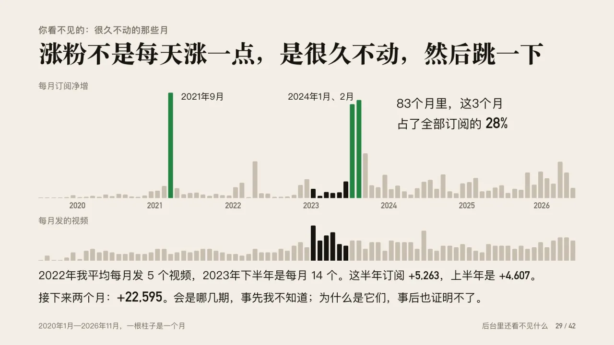
讲稿
这是 83 个月里每个月涨的订阅。大部分月份是矮的。绿的三个月，占了全部订阅的 28%。下面一排是我每个月发了多少视频。2023 年 7 月我离开大厂回美国，发的量从前一年的每月 5 个左右变成每月 14 个。那半年订阅涨了五千多，跟上半年差不多。多发了两倍，没有多涨。然后一月、二月，两个月涨了两万二，是跟硅谷徐老师和 Leon 聊的那几期。会是哪几期我事先不知道，为什么是它们，事后我也证明不了。手艺就是这样，它不给你证明。
每月订阅净增
2020 2021
2022 2023
2024 2025
2026 2021年9月
2024年1月、2月
83个月里，这3个月占了全部订阅的 28%
每月发的视频
2022年我平均每月发 5 个视频，2023年下半年是每月 14 个。这半年订阅 +5,263，上半年是 +4,607。
接下来两个月：+22,595。会是哪几期，事先我不知道；为什么是它们，事后也证明不了。
2020年1月—2026年11月，一根柱子是一个月
30 · 后台里还看不见什么
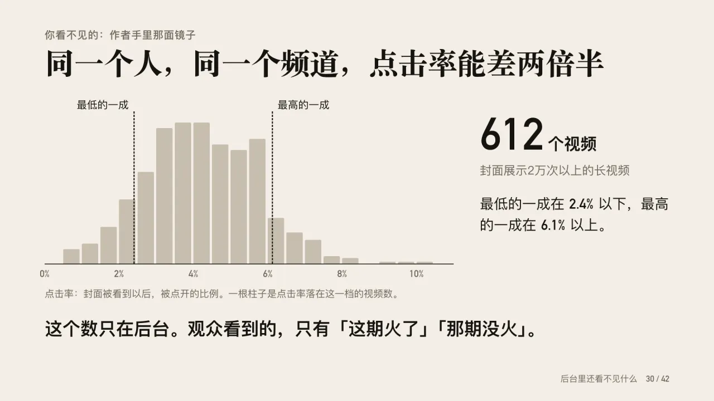
讲稿
这是我 612 个视频的点击率。同一个人，同一个频道，同一批观众。最低的那一成不到 2.4%，最高的那一成超过 6.1%，差两倍半。点击率说的是选题、标题和封面这一关。每发一期，后台都会告诉我这一期在哪一档。这就是镜子。可是这个数你在外面看不到。你只看到这期火了、那期没火，那当然像玄学。
0% 2%
4% 6%
8% 10%
点击率：封面被看到以后，被点开的比例。一根柱子是点击率落在这一档的视频数。
最低的一成
最高的一成
612个视频
封面展示2万次以上的长视频
最低的一成在 2.4% 以下，最高的一成在 6.1% 以上。
这个数只在后台。观众看到的，只有「这期火了」「那期没火」。
31 · 后台里还看不见什么
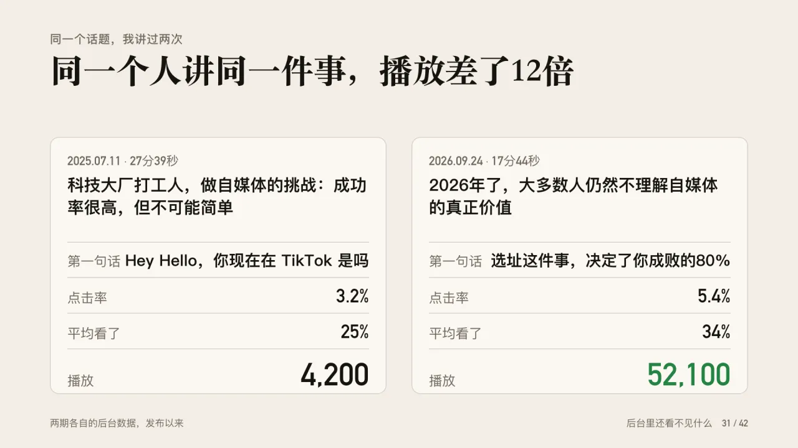
讲稿
打工人该不该做自媒体，这件事我讲过两次。去年七月一次，今年九月一次。去年那期是跟朋友聊天的录屏，第一句话是「Hey Hello，你现在在 TikTok 是吗」。今年这期，第一句话是「选址决定了你成败的 80%」。点击率 3.2% 对 5.4%。平均看完的比例 25% 对 34%。播放四千二对五万二。两期隔了一年多，变的东西不止一样，我不说是哪一条造成的。但你看，每个环节都有一个数摆在那。
2025.07.11 · 27分39秒
科技大厂打工人，做自媒体的挑战：成功率很高，但不可能简单
第一句话 Hey Hello，你现在在 TikTok 是吗
点击率 3.2%
平均看了 25%
播放 4,200
2026.09.24 · 17分44秒
2026年了，大多数人仍然不理解自媒体的真正价值
第一句话 选址这件事，决定了你成败的80%
点击率 5.4%
平均看了 34%
播放 52,100
两期各自的后台数据，发布以来
32 · 后台里还看不见什么
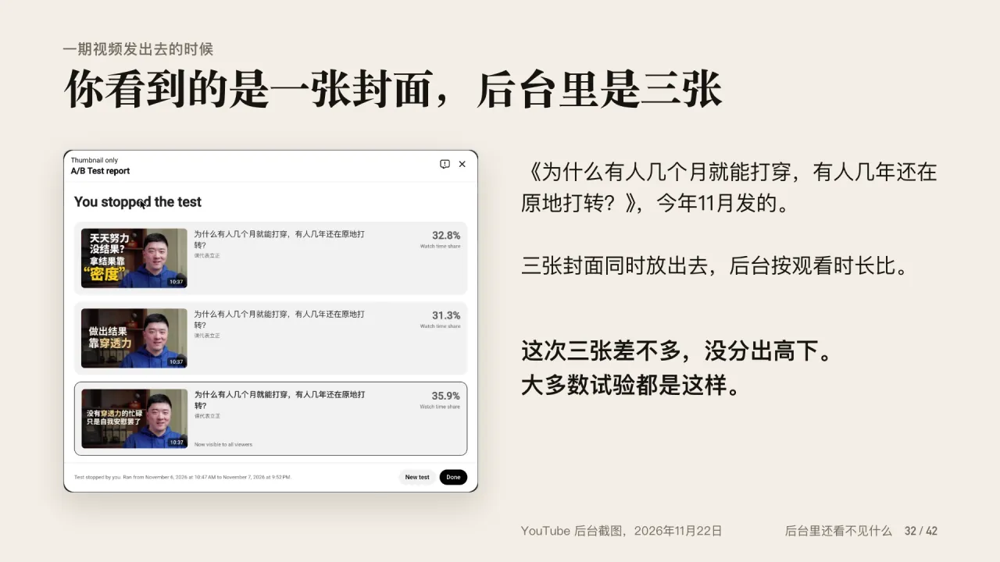
讲稿
这是我这个月初发的一期，讲 intensity。封面做了三张，同时放出去，后台会按观看时长比哪张好。这次三张差不多，没分出来。说实话大多数试验都是这样，没有惊喜。但做的人每一期都在照镜子，看的人不知道有这回事。
《为什么有人几个月就能打穿，有人几年还在原地打转？》，今年11月发的。三张封面同时放出去，后台按观看时长比。
这次三张差不多，没分出高下。大多数试验都是这样。
YouTube 后台截图，2026年11月22日
33 · 后台里还看不见什么
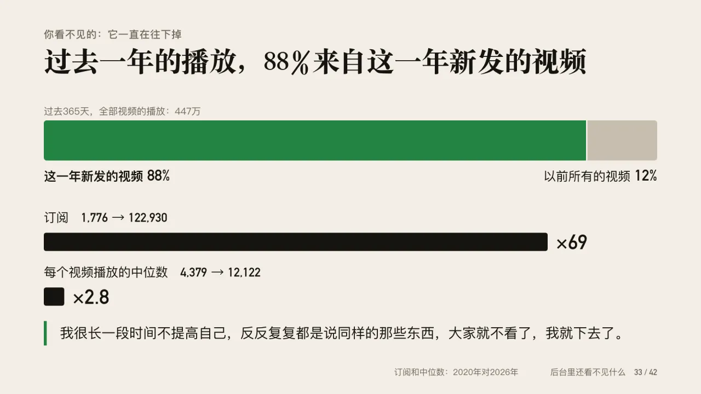
讲稿
很多人以为内容发出去就一直有流量。我过去一年的播放，88% 来自这一年新发的视频。之前五年发的所有视频加起来，只占 12%。再看这两条。我的订阅从第一年的一千七涨到十二万，69 倍。每期视频的播放中位数，只涨了不到 3 倍。平台不会把视频推给你所有的粉丝。每一期都要重新挣。所以这是逆水行舟。停下来，它就往下掉。
过去365天，全部视频的播放：447万
这一年新发的视频 88%
以前所有的视频 12%
订阅 1,776 → 122,930
×69 每个视频播放的中位数 4,379 → 12,122
×2.8 我很长一段时间不提高自己，反反复复都是说同样的那些东西，大家就不看了，我就下去了。
订阅和中位数：2020年对2026年
34 · 后台里还看不见什么
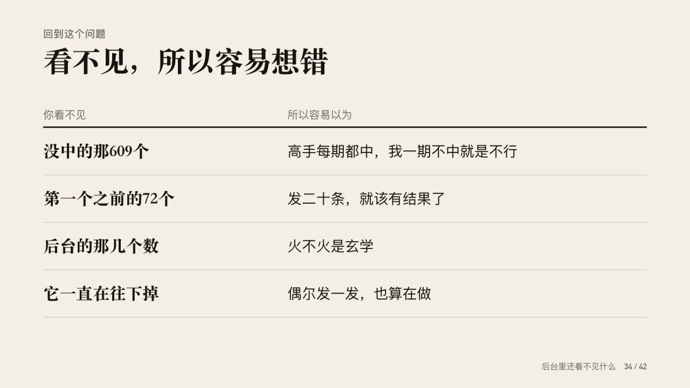
讲稿
看不见没中的，就以为别人每期都中。看不见开头那 72 个，就以为发二十条该有结果了。看不见后台的数，就以为火不火看命。看不见它在往下掉，就以为偶尔发一发也算在做。
你看不见 所以容易以为
没中的那609个 高手每期都中，我一期不中就是不行
第一个之前的72个 发二十条，就该有结果了
后台的那几个数 火不火是玄学
它一直在往下掉 偶尔发一发，也算在做
36 · 怎么才算死磕
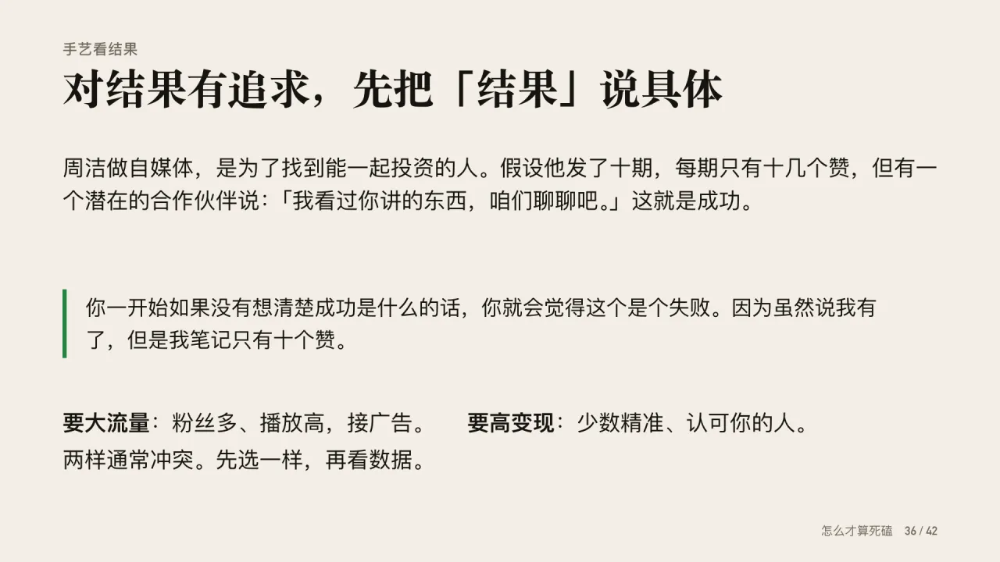
讲稿
手艺看结果。你不想要结果，后台那面镜子就没用，发出去就只是交作业。但结果是什么要先说清楚。对周洁来说，十个赞带来一个合作伙伴，就是成功。要大流量还是要高变现，两样通常冲突。我自己粉丝不算多，但在同样粉丝量的博主里，我的变现能力很强，而且不接商单。
周洁做自媒体，是为了找到能一起投资的人。假设他发了十期，每期只有十几个赞，但有一个潜在的合作伙伴说：「我看过你讲的东西，咱们聊聊吧。」这就是成功。
你一开始如果没有想清楚成功是什么的话，你就会觉得这个是个失败。因为虽然说我有了，但是我笔记只有十个赞。
要大流量：粉丝多、播放高，接广告。 要高变现：少数精准、认可你的人。
两样通常冲突。先选一样，再看数据。
37 · 怎么才算死磕
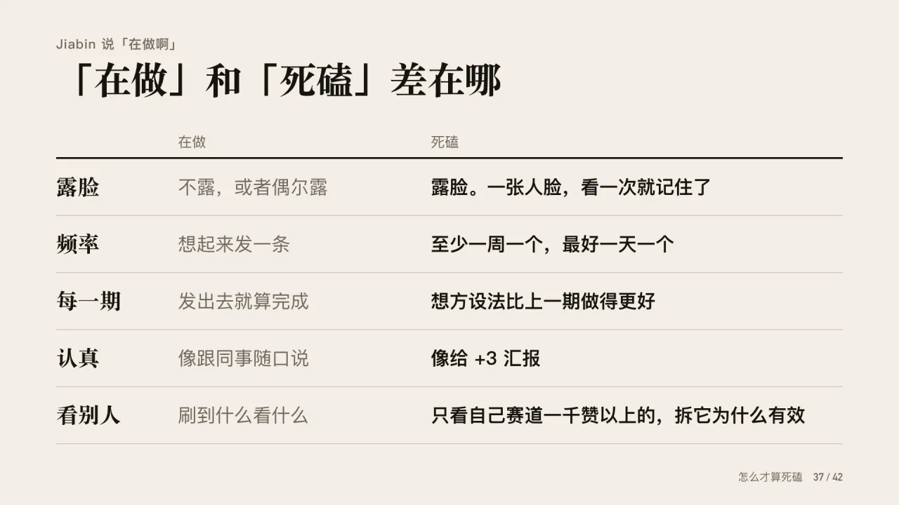
讲稿
露脸。一个 logo 要看一百次才记得住，一张人脸看一次就记住了。频率至少一周一个，最好一天一个。每周逼自己发一次，不叫勤。每一期发之前，你说得出它比上一期好在哪。这就是对结果有追求。认真有好几档。你跟同事讲工作是一档，跟老板讲是一档，给 +3 汇报又是一档。你拿哪一档对待你的账号？看别人也要挑着看。只看你这个赛道一千赞以上的，拆它的标题、前三秒、后面的展开。
在做 死磕
露脸 不露，或者偶尔露 露脸。一张人脸，看一次就记住了
频率 想起来发一条 至少一周一个，最好一天一个
每一期 发出去就算完成 想方设法比上一期做得更好
认真 像跟同事随口说 像给 +3 汇报
看别人 刷到什么看什么 只看自己赛道一千赞以上的，拆它为什么有效
38 · 怎么才算死磕
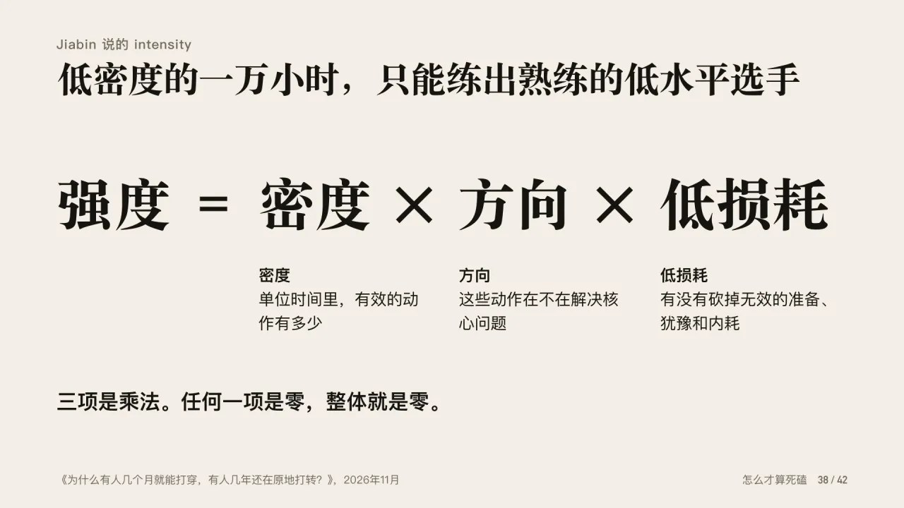
讲稿
Jiabin 用的词是 intensity。我这个月初刚好发了一期讲它，我把它翻译成强度。强度是密度乘方向乘低损耗。三天打鱼两天晒网，密度就低。一边做一边到处找方法、找工具，损耗就高。三项是乘法，一项是零，整体就是零。
强度 ＝ 密度 × 方向 × 低损耗
密度单位时间里，有效的动作有多少 方向这些动作在不在解决核心问题 低损耗有没有砍掉无效的准备、犹豫和内耗
三项是乘法。任何一项是零，整体就是零。
《为什么有人几个月就能打穿，有人几年还在原地打转？》，2026年11月
39 · 怎么才算死磕
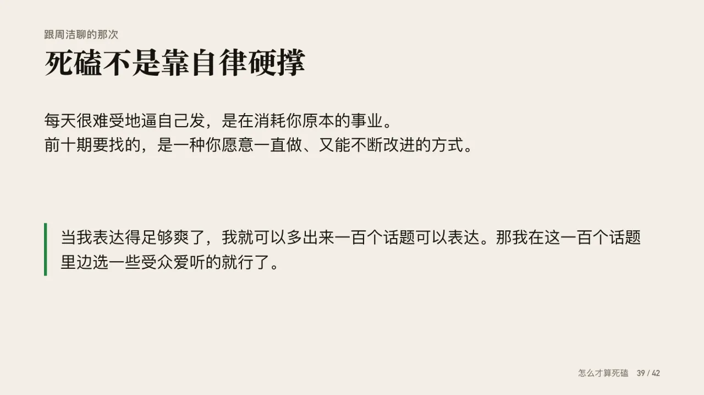
讲稿
周洁听完说，那首先得有 discipline。我说又反了。你每天很难受地逼自己发，是在消耗你本来的事业。做内容没有通用的工作流。我有想法了，拿起手机到外面录一两分钟，这不是最好的方式，但适合我。表达欲和观众爱听的，也不用平衡。你表达得足够爽，话题会多到一百个，从里面挑观众爱听的就行了。
每天很难受地逼自己发，是在消耗你原本的事业。前十期要找的，是一种你愿意一直做、又能不断改进的方式。
当我表达得足够爽了，我就可以多出来一百个话题可以表达。那我在这一百个话题里边选一些受众爱听的就行了。
40 · 怎么才算死磕
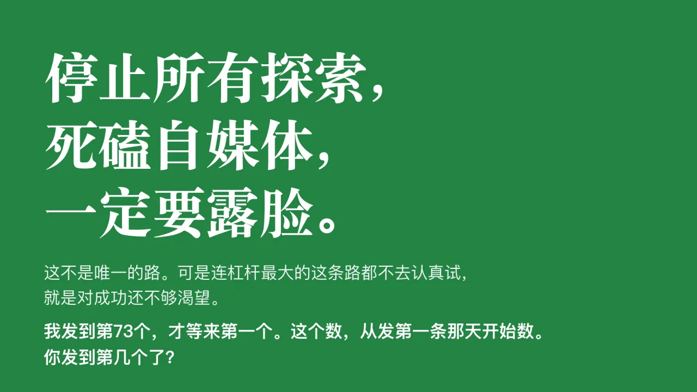
讲稿
我的建议就是评论区那一句：停止所有探索，死磕自媒体，一定要露脸。我不是说这是唯一的路径。但是如果你连杠杆最大的这条路都不去认真尝试，那就是对成功不够渴望。开头我问过你发到第几个了。我发到第 73 个才等来第一个。这个数是从发第一条那天开始数的，晚一个月开始，就晚一个月到。
这不是唯一的路。可是连杠杆最大的这条路都不去认真试，就是对成功还不够渴望。
我发到第73个，才等来第一个。这个数，从发第一条那天开始数。你发到第几个了？
41 · 怎么才算死磕
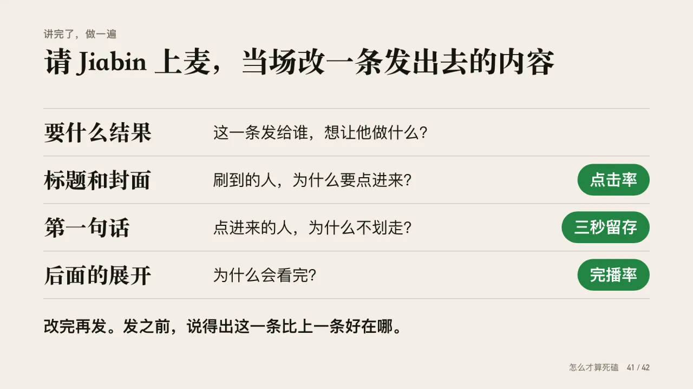
讲稿
前面都是我在讲。现在做一遍：拿一条已经发出去的内容，当场改。顺序就是前面那三个环节。先问这一条想要什么结果，再看标题和封面、第一句话、后面的展开。改完发出去，看后台那几个数有没有变。发之前，你说得出它比上一条好在哪。你也可以拿自己最近发的一条，跟着一起改。
要什么结果 这一条发给谁，想让他做什么？
标题和封面 刷到的人，为什么要点进来？
点击率 第一句话 点进来的人，为什么不划走？
三秒留存 后面的展开 为什么会看完？
完播率 改完再发。发之前，说得出这一条比上一条好在哪。
42 · 怎么才算死磕
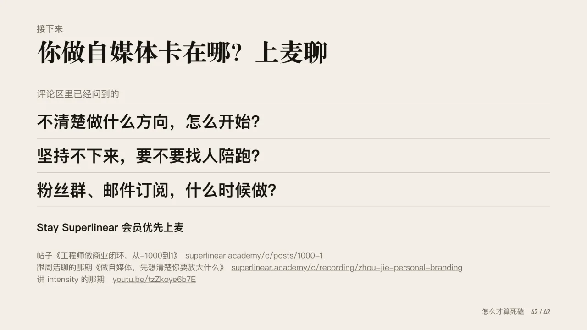
讲稿
这三个是评论区里已经问到的，可以从这里开始。陪跑那个问题，我在评论里回的是：陪跑是伪命题。粉丝群、邮件订阅那个问题，我的回答是先做半年，到时候再想也不晚。Stay Superlinear 会员优先上麦。
评论区里已经问到的
不清楚做什么方向，怎么开始？
坚持不下来，要不要找人陪跑？
粉丝群、邮件订阅，什么时候做？
Stay Superlinear 会员优先上麦
帖子《工程师做商业闭环，从-1000到1》 superlinear.academy/c/posts/1000-1跟周洁聊的那期《做自媒体，先想清楚你要放大什么》 superlinear.academy/c/recording/zhou-jie-personal-branding讲 intensity 的那期 youtu.be/tzZkoye6b7E
本页链接superlinear.academy/c/posts/1000-1 ↗superlinear.academy/c/recording/zhou-jie-personal-branding ↗youtu.be/tzZkoye6b7E ↗